Manual
AQ-1 turns the M-VAVE FM-1 into a generative light drum & bass instrument, in the mood of console menus and loading screens from the 2000s: warm, calm and hopeful, as if something is about to begin. It composes chords, rhythms and melodies without end. You decide what plays, and when; and when you want to, you play the melody yourself, on the keys.
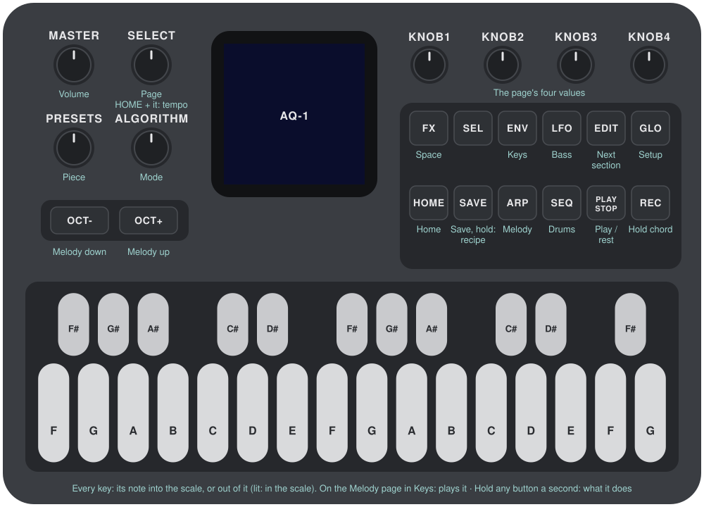
1Install
The easiest way is the install page, from Chrome or Edge, with the FM-1 connected by USB. Nothing to install on the computer.
From a terminal, with the package from the site's front page, or one you built from the source (BUILDING.md): install Python 3 and pip3 install mido python-rtmidi, connect the FM-1 with a USB data cable, and run this from the source tree:
python3 base/tools/fm1_install.py aq1.fwscDon't unplug it while it's writing. When it finishes, the FM-1 restarts into AQ-1. An FM-1 on M-VAVE's "Open" firmware must go back to the stock firmware first.
Go back: download M-VAVE's firmware (FM-1.fwsc) and install it with the same command. M-VAVE's own updater, M-UPGRADE, can also do it. What AQ-1 saved may be lost.
Installing other firmware is at your own risk. If the FM-1 ever won't start, see "Recovering an FM-1 that won't start", under Troubleshooting.
2Getting started
AQ-1 starts playing as soon as it's on, with five rising notes and then only the keys and the pad. A few minutes with it:
- Listen. The first piece, Load Screen, is playing in D Lydian. Turn MASTER for the volume.
- Play the melody. Hold SELECT and press ARP: the melody's layer is on. Press ARP alone for its page, and play: there, the keys are the melody's. It stays silent until you do. (Or let AQ-1 compose it, or arpeggiate: see "The melody's modes".)
- Bring in the bass and the drums. Hold SELECT and press LFO, then SEQ, then FX. The bass, the kick and snare, and the hats each come in on the next sixteenth, and go at once.
- Set how much the drums play. Press HOME and turn KNOB 2, Energy: half time at the bottom, a full beat at the top.
- Call a break. Hold SELECT and press EDIT. The break starts on the next bar.
- Change the scale. Back on any page but the Melody's, press a key whose note is lit: it leaves the scale. Press it again to bring it back. Any key that isn't lit adds its note.
- Try another piece. Turn PRESETS. The layers you have on stay on.
- Rest. Press PLAY: the drums, the bass and the melody stop, and the keys and the pad stay on the chord. PLAY again carries on from exactly there.
What you change is kept with the piece. AQ-1 saves it by itself while resting, or press SAVE.
Not sure what a button does? Hold it for a second and a card says. Let go and nothing else happens.
3Controls
The drawing at the top shows most of them; here they all are. "Every hold, by page", below, has the combinations in one place.
| Control | What it does |
|---|---|
| Keys | The scale. Each key adds its note to the scale or takes it out, and the keys light up for the notes in it. Every octave of a note is the same key. The root stays, and the scale keeps at least three notes. On the Melody page, in the modes Keys and Keys Arp, they play the melody instead (see "Playing it yourself"). |
| SELECT + a key | Whether chords may stand on that note (see "Degrees"). |
| PLAY | Play / rest. Lit green while playing. It acts at once, even during a save. |
| REC | Hold: no new chord and no new section, while everything else plays on over the chord. Press again to let go. Lit while held. |
| EDIT | The next section, on the next bar. While resting, on the first bar after it plays again. |
| SELECT + EDIT | A break on the next bar, if it's playing and there are drums to play it. Otherwise the screen says NO DRUMS NO BREAK. |
| HOME | The Home page. |
| ENV · ARP · LFO · SEQ · FX · GLO | The Keys, Melody, Bass, Drums, Space and Setup pages. The lit button shows the page. |
| SELECT + ENV · ARP · LFO · SEQ · FX | A layer on or off (see "Building a piece"). The page doesn't change. |
| SELECT + HOME | The piece's arrangement: Hands or Auto. |
| SELECT | Turn: the previous or next page. Hold HOME and turn it for the tempo, from any page. |
| SELECT, held alone | After a moment, the Degrees screen, for as long as you hold it. Turning a sound's knob goes back to the page for the rest of that hold. |
| ALGORITHM | Mode: Ionian, Dorian, Phrygian, Lydian, Mixolydian, Aeolian, pentatonic major and minor. Loads the mode's scale; editing it with the keys makes it Custom. |
| PRESETS | The piece, one of eight. It goes round. |
| KNOB 1–4 | The page's four values, shown at the bottom of the screen. A few clicks are always single steps; on the wider ranges a quick turn speeds up, so half a turn sweeps the range. |
| SELECT + KNOB 1 | On the Keys, Melody and Bass pages: the layer's sound (see "Sounds"). The knob's value doesn't move. |
| SELECT + GLO | On the Keys, Melody and Bass pages: the sound editor (see "Building a sound"). On the other pages, nothing. |
| SELECT + KNOB 2 | On the Keys page: the pad's sound. On the Melody page: the melody's mode, Phrases, Arp, Keys or Keys Arp (see "The melody's modes"). |
| SELECT + KNOB 3 | On the Melody page: the arpeggio's pattern. |
| SELECT + KNOB 4 | On the Melody page: the arpeggio's skip, how many of its notes rest (see "Arp"). Octave doesn't move. |
| SELECT, FX or GLO + KNOB 1–4 | On the Space page: the keys' and the melody's effects and sends (see "The keys' and the melody's effects"). |
| SELECT + REC | On the Melody page in Keys Arp: Latch (see "Playing it yourself"). Anywhere else, REC as ever. |
| OCT− / OCT+ | The melody's octave, two down to two up, from any page. For what you play, it counts from the next key you press. |
| MASTER | Volume. |
| SAVE | Saves all eight pieces. Held for 1.5 s: puts the piece back to its recipe. |
Help: hold a button for about a second, by itself, and a card says what it does. PLAY and SELECT have no card. A key, a knob or another button puts the card away; letting go after it does nothing else.
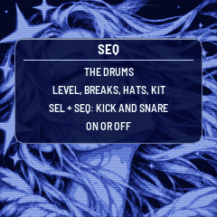
Every hold, by page
What a held button does, in one place. Anything not listed does what it does anyway.
Anywhere
| Hold | And | What it does |
|---|---|---|
| SELECT | a key | Whether chords may stand on that note (Degrees). This goes for every page, the Melody page in Keys and Keys Arp too |
| SELECT | ENV · ARP · LFO · SEQ · FX | Keys and pad · melody · bass · kick and snare · hats, on or off. The page stays |
| SELECT | HOME | Hands or Auto, each with its set of layers and its melody's mode |
| SELECT | EDIT | A break on the next bar |
| SELECT | nothing, a moment | The Degrees screen, until you let go. Not in the sound editor, and not once SELECT has gone with something else in this hold |
| HOME | turn SELECT | The tempo |
| any button but PLAY and SELECT | nothing, about a second | Its help card. Letting go then does nothing else |
| SAVE | nothing, 1.5 s | The piece back to its recipe. It isn't saved until the next save |
| OCT− and OCT+ | nothing, 5 s | Update mode, with a countdown; let go to cancel |
| OCT− and OCT+ | switching on | Calibration |
On one page. With a knob not listed here, SELECT changes nothing: the knob is the page's value.
| Page | Hold | And | What it does |
|---|---|---|---|
| Keys | SELECT | KNOB 1 · KNOB 2 | The keys' sound · the pad's sound |
| Keys | SELECT | GLO | The sound editor: the keys', then the pad's, then out |
| Melody | SELECT | KNOB 1 · 2 · 3 · 4 | The sound · the mode · the arpeggio's pattern · its Skip |
| Melody | SELECT | GLO | The sound editor, and out |
| Melody, in Keys Arp | SELECT | REC | Latch. In any other mode or page, REC holds the chord as ever |
| Bass | SELECT | KNOB 1 | The sound |
| Bass | SELECT | GLO | The sound editor, and out |
| Space | SELECT | KNOB 1 · 2 · 3 · 4 | Keys' effect · keys' Motion · melody's effect · melody's Motion |
| Space | FX | KNOB 1 · 2 · 3 · 4 | Keys' Echo · keys' Reverb · melody's Echo · melody's Reverb. Letting go of FX then does nothing else |
| Space | GLO | KNOB 1 · 3 | Keys' Depth · melody's Depth. KNOB 2 and 4 do nothing under GLO. Letting go of GLO then does nothing else |
| Setup | GLO alone | Not a hold: M and S start afresh |
SELECT + GLO does nothing on Home, Drums, Space and Setup. Home and Drums have no holds of their own.
In the sound editor (Keys, Melody and Bass pages, until you leave it)
| Hold | And | What it does |
|---|---|---|
| KNOB 1 · 2 · 3 · 4 | Ratio · Depth · Attack · Decay | |
| SELECT | KNOB 1 · 2 · 4 | Start · Mod time (Bass: Speak; Pad: Detune) · Release. KNOB 3 does nothing |
| SELECT | GLO | Leaves it; on the Keys page, from the keys' editor to the pad's first |
| SELECT | ENV · ARP · LFO · SEQ · FX · HOME · EDIT · a key | As anywhere |
The page's own button leaves it too. So does another page's button, the SELECT encoder, a new piece, or holding SAVE.
Degrees
A key changes the scale (on the Melody page, in Keys or Keys Arp, it plays). SELECT + a key, there too, changes something else: whether chords may stand on that note. The note stays in the scale, so the melody and the chords' other notes can still use it, but no chord is built on it and the bass doesn't sit on it as a root. The screen says NO CHORDS ON F#, or CHORDS ON F#, and the change takes effect from the next chord.
At least two degrees stay on, besides the root: the screen says 2 DEGREES AT LEAST otherwise. A note outside the scale can't be changed (NOT IN THE SCALE). The setting is kept relative to the key, so it survives a change of Root, and it's saved with the piece. A note you take out of the scale keeps its setting for when it comes back.
Hold SELECT alone to see them. While SELECT is held, the keys that chords may not stand on go dark.
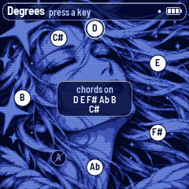
4Building a piece
The piece is yours. It powers on in Hands, with only the keys and the pad playing. You bring in the rest and take it away; AQ-1 goes on composing the chords, the rhythms and the melody, and leaves what plays, and when, to you.
Hold SELECT and press a layer's button. It's a real switch: what's off comes on, what's on goes off. Layers work at any Energy and in every style:
| Hold SELECT, press | Layer | When |
|---|---|---|
| ENV | Keys and pad | Over about a second |
| ARP | Melody | Over about a second. In Keys, silent until you play; in Phrases, a phrase within a few bars |
| LFO | Bass | Off at once; on at the next sixteenth, in the note it has or its next |
| SEQ | Kick and snare, with the ghosts, rim and tom | Off at once; on at the next sixteenth, wherever the bar's rhythm is |
| FX | Hats | Off at once; on at the next sixteenth, wherever the bar's rhythm is |
"At once" is a few milliseconds, so it doesn't click; a sixteenth is about 90 ms at this tempo. (While resting there is nothing to wait for.)
A layer that's off only stops being heard. Its level stays where it was, its echoes and reverb ring out, its MIDI goes on as at level 0, and everything goes on composing unheard, so it comes in at the right place in the song. With the drums off, the kick no longer pulls the keys down. What you play with the melody off goes out over MIDI all the same. The screen says BASS ON or BASS OFF, and so on. A layer that's off reads empty on its meter, and with Lights on, its button loses its glow unless it's the page you're on.
The layers you have on stay on when you change piece, when a piece goes back to its recipe, and through rests. They aren't saved: power-on goes back to the keys and the pad.
Energy
Energy (Home, KNOB 2) is how much the drums you have on play, and the character of the harmony. It never turns a layer on or off, and the whole range is a beat, in every style:
| Energy | Drums | Harmony |
|---|---|---|
| 0–9 | Half time, sparse | Alone |
| 10–34 | Half time | Drifting |
| 35–59 | Light | Grown |
| 60–79 | Full | Grown |
| 80–100 | Full | At its peak |
The higher the Energy, the busier the rhythm within each step too, the heavier the bass and the firmer the piano. The Style still counts: its rhythm and its bass figures. Drift's full rhythm is still a sparse thing.
Sections
EDIT steps to the next section, on the next bar, and there it stays; in Hands no section comes by itself, however long you wait. A section doesn't say what plays. It brings a new chord at once, a new groove for the drums at the density Energy asks, how busy the melody is (the Full section busiest, the Intro and Out sparest), and a step in the harmony's colour: down in the Intro, the Breakdown and Out, up in Full.
Breaks
SELECT + EDIT calls a break on the next bar, if the drums are on and their level is above 0. In Hands no break comes any other way, and the Breaks knob (Drums, KNOB 2) says how long it is: up to 33 one bar, up to 66 two, above that four. A break ends with its phrase, so the next phrase lands on the grid.
While a break is heard, the screen shows its frame, with the bars it has. Turning a knob brings the page back for a moment. Press PLAY in the middle of one and the screen goes to the rest or the page; PLAY again carries the break on from where it stopped.
5Auto
SELECT + HOME switches the piece to Auto and back, and the screen says AUTO or HANDS. The piece keeps its choice when saved. In Auto the arranger leads the sections by itself, through Intro, Hats, Light, Breakdown, Full and Out, and all the layers are on: this is the piece playing itself. Auto and Hands each keep their own set of layers, and their own mode for the melody (Phrases in Auto and Keys in Hands, to begin with), so switching takes you to that mode's set, and on from the section you were in.
In Auto:
- Energy is a ceiling on the sections: under 10 hats at most, under 35 half time at most, under 60 the light beat, and from 60 everything. Above 70 the breakdowns get shorter.
- Breaks is how often the arranger plays a break, and 0 means none. SELECT + EDIT still calls one, and EDIT still moves on to the next section.
- A press on a layer that's playing takes it out, and it stays out whatever section comes.
- A press on a layer that's off but in the arrangement is as in Hands: off at once, on at the next sixteenth.
- A press on a layer the arranger has absent right now brings it: that takes a jump to another section, with its chord and its rhythm, so it's the one that waits for the next bar, the first place it plays (
DRUMS ON, and you're in the Light section, say). Under Energy 10 Auto has no drums anywhere to go to, and the screen saysDRUMS ONENERGY UP.
6The pieces
PRESETS chooses one of eight pieces. Each is a recipe: key, mode, tempo, style and every knob. Each remembers how you left it, including its scale, its degrees, its sounds, the melody's mode with its pattern, Skip and Latch, and Hands or Auto. A card shows the piece for a moment. Each new piece, and each power-on, starts composing from a new seed, so the settings are kept but the music is always new.
Hold SAVE for 1.5 s to put the piece you're on back to its recipe. Tune, MIDI out and Lights are the same for all pieces. All eight start in Hands, with the first sound of each layer and the melody in Keys, its layer off.
| Piece | Key and mode | Tempo | Style | Character |
|---|---|---|---|---|
| Load Screen | D Lydian | 170 | Liquid | The wait itself |
| Aqua | A Ionian | 172 | Liquid | Sunny, glossy |
| Skyline | G Mixolydian | 180 | Roller | Open, the fastest |
| Rainfall | C Dorian | 160 | Drift | More room, a sparse beat |
| Aurora | E Lydian | 164 | Loading | Wide pads, slow light |
| Lagoon | Ab Ionian | 168 | Roller | The warmest, on the bass |
| Save Point | Bb pentatonic major | 152 | Drift | The quietest, to rest |
| Afterglow | F Aeolian | 166 | Jungle | Sunset, in minor |
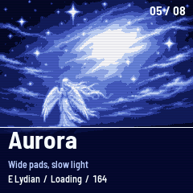
7The pages
Seven pages, each on its own button, with four values on KNOB 1–4. SELECT steps through them in this order.
HOME: Home

- Tempo: 150 to 180 (also hold HOME and turn SELECT, from any page).
- Energy: see "Building a piece" and "Auto".
- Evolve: repeat or change. At 0 it repeats one phrase; in the middle it repeats and varies; at 100 it never repeats.
- Style: the rhythm and the bass figures. - Liquid: an even two-step with few breaks. The main one. - Roller: a rolling beat, more ghost notes, a busier bass. - Jungle: chopped breaks more often, more syncopation. - Half: half time as its base. - Drift: hardly any drums, long breakdowns. - Loading: an endless build that seldom reaches the full beat.
In Hands, Energy sets the level, so a style is its rhythm's weights and its bass. The long breakdowns and the endless build are the arranger's, in Auto.
ENV: Keys
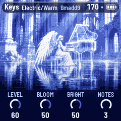
- Level: the keys' level. The pad follows it.
- Bloom: how slowly a chord opens and closes, from about 15 ms to over a second in its attack.
- Bright: from dark to bright.
- Notes: how many lone notes a chord may have between changes, 0 to 3. Short chords have fewer.
ARP: Melody

- Level.
- Rate: how often a phrase comes. In Hands, from 61 up, the rests shrink whatever the section; at 100 the phrases come about back to back, even in the Intro and Out, with a silence of 4 bars at the most. Up to 60, and in Auto at any value, a calm section keeps its long rests. In Arp and Keys Arp, the division: up to 33 a quarter, up to 66 an eighth, above that a sixteenth; the knob shows it. In Keys it does nothing.
- Tone: the voices it chooses from, the softest to the brightest (flute, vocal, vibes, marimba, music box, glass). With a sound chosen (see "Sounds"), only how bright that voice is.
- Octave: two down to two up (OCT− and OCT+ too).
#### The melody's modes
Hold SELECT and turn KNOB 2 for the mode, round and round; it's kept with the piece, one for Hands and one for Auto.
| Mode | What it is | The keys, on this page |
|---|---|---|
| Phrases | AQ-1 composes, as above. Auto's to begin with, and to be had in Hands | The scale |
| Arp | The notes of the chord sounding, one after another | The scale |
| Keys | You play. Hands' to begin with, and to be had in Auto | The melody |
| Keys Arp | The keys you hold, one after another | The melody |
#### Playing it yourself
In Keys and Keys Arp, on the Melody page, the keyboard plays the melody. On every other page the keys change the scale as ever, and SELECT + a key is the Degrees on every page, this one too. A key that went down playing plays until it comes up, whichever page you've gone to by then, and its release touches no scale; one that went down on another page is the scale's, and playing starts with the next press.
The notes are as you press them, chromatic, with nothing moved to the scale. The keys show the scale, to play by: its notes at a middle level, the tonic bright, what you're playing bright too, the rest off, as far as the Lights setting (Setup) allows: with Lights off, nothing. The lowest key (F3 on the panel) sounds F4, so at Octave 0 the keys are in the melody's register, over the piano; OCT− and OCT+ or the Octave knob move them, from the next key you press.
The sound is the melody's: its sound (SELECT + KNOB 1), Level, Tone, Octave and the room, echoes included. With the Auto sound, Tone chooses one voice, and it stays that voice while you play: from the softest at the bottom through Vibes, Marimba and Music box; Flute and Vocal are to be chosen, and they start slowly. The FM-1 plays at one gentle velocity (its keys can measure how hard they're struck, but AQ-1 doesn't use that). Up to four notes sound at once; a fifth takes the oldest, softly. A note ends with its key, in the sound's own release. A note you hold past what the sound lasts goes quiet, and stays down for MIDI until you let it go.
On the way to the ear there is no grid: a note sounds within a few milliseconds of the press, playing or resting (in a rest you play over the keys and the pad, in the room). A break, a new section or a save doesn't touch it. SELECT + ARP off silences it, and it still goes out on MIDI channel 2, like anything the melody plays. A new piece, a piece put back to its recipe or a mode with no keys (a change to Auto can be one) lets go of everything; keys still down then do nothing more until they're pressed again.
Keys Arp arpeggiates the keys you hold, the notes as held, on the grid, by the same patterns, Rate and Skip as Arp, softly, with the same short tails. A hold after silence begins at the next sixteenth; after that the notes keep to the division. Press another key and it joins the figure at its place; let one go and the figure goes on without it. The bar and the grid never move for it. Let all of them go and it stops. In a rest it doesn't strike, there being no grid, and it goes on when you wake it. Played (a pattern, the last) goes in the order you pressed them; the others go by pitch.
Latch: in Keys Arp, hold SELECT and press REC. Now what you let go keeps playing. Press a key with none held and it starts a new set; press more while one is down and they join it. SELECT + REC again turns it off, and what no key holds goes. It's kept with the piece, and the notes aren't. A rest keeps the set, and it goes on when you wake it. SELECT + ARP off silences it and keeps the set. A panic, a new piece or another mode clears it.
#### Arp
Arp plays the notes of the chord sounding, one after another, on the grid, through two octaves of the melody's register, and follows each new chord at once. Hold SELECT and turn KNOB 3 for the pattern:
- Up, Down, Up-Down, Random.
- Converge (
Conv): from the outside in: the lowest, the highest, the next lowest, the next highest. - Pedal top (
PedT): the top note every other note, the others in turn from the bottom up. - Pedal root (
PedR): the lowest note every other note, the others in turn from the bottom up. "Root" is the lowest note of the two octaves, which isn't always the chord's root. - Played: Keys Arp's: the order you pressed them. On the chord, which has no such order, Up.
KNOB 4, with SELECT held, is Skip, 0 to 100: the share of the division's steps that strike no note, no voice and no MIDI. At 0 every step plays. At 100 Arp is silent, though the mode stays Arp. In between the grid doesn't shift: a figure runs on through its rests, so a rest takes out the note that would have been there and the next step plays what it always would. Which steps rest is a one-bar rhythm made from the piece's seed: the same in every bar while the setting holds, another in another piece. Turning Skip up keeps the rests you have and adds to them. The bar's first beat is the last to go, and the other beats tend to outlast the sixteenths between them. A bar has 4, 8 or 16 steps at 1/4, 1/8 and 1/16, so Skip moves in those steps: at 1/4 only 25, 50 and 75 change anything.
The top line says each for a moment (MELODY MODE Arp, ARP PATTERN Up-Down, ARP SKIP 25) and then keeps them next to the page's name, Auto/Arp/Up-Down/S25 (no S at Skip 0; /L at the end when Latch is on, Auto/Keys Arp/Up/L); a long sound's name gives way to them when there is no room, and at the very longest, in Keys Arp, the words shorten: KArp/UpDn/S100/L.
The four knobs stay what they are. Level and Octave as ever. Rate is the division. Tone, with the Auto sound, chooses one voice from what it allows, leaving out the two with a slow attack, and Auto changes it every 32 bars or so, never note by note; a sound you choose is that sound, and Tone how bright it is. Arp plays softly, under the mix; a long sound's tail is shortened to fit the division. It uses the melody's voices and MIDI channel 2. SELECT + ARP turns it on and off like any layer, and off it still sends its MIDI. Back in Phrases, a phrase comes at its next chance, and pattern and Skip wait for the next arpeggio.
LFO: Bass
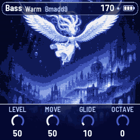
- Level.
- Move: which figures it may play, from long roots to rolling ones.
- Glide: how slowly it slides to its next note, from about 1 ms to 300 ms.
- Octave: one down, home, or one up.
SEQ: Drums
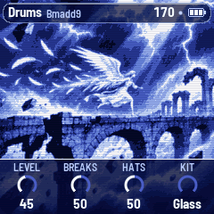
- Level: the kick and the snare, with the ghosts, rim and tom.
- Breaks: in Hands, how long a called break is; in Auto, how often the arranger plays one.
- Hats: their level.
- Kit: Glass or Moss.
FX: Space
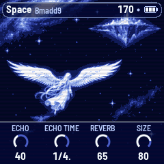
- Echo: how much goes to the echoes.
- Echo time: 1 bar, 1/2, a dotted half, a dotted quarter, 2 bars or 4 bars.
- Reverb: how much goes to the plate.
- Size: how long the plate rings and how many times the echo comes back.
#### The keys' and the melody's effects
The keys and the melody can each have one effect, and their own sends to the echo and the reverb. These are the Space page's under a held button, with the four knobs as they were. Left knobs for the keys, right knobs for the melody:
| Hold | KNOB 1 | KNOB 2 | KNOB 3 | KNOB 4 |
|---|---|---|---|---|
| SELECT | Keys' effect | Keys' Motion | Melody's effect | Melody's Motion |
| FX | Keys' Echo | Keys' Reverb | Melody's Echo | Melody's Reverb |
| GLO | Keys' Depth | Melody's Depth |
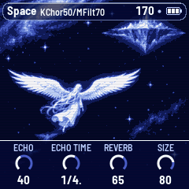
The header shows what is on with its Motion, KChor50/MFilt70; with both Off it says nothing. A turn says the value by itself. Letting go of FX or GLO after a turn does nothing else, so GLO doesn't take you to Setup.
- Effect: Off, Chorus, Autopan, Tremolo or Filter. A change goes over in a few hundredths of a second, in mid-note too. Off is the sound as it was. - Chorus: a short delay that moves, a little out of tune with what goes in, a different way to each side. - Autopan: from side to side, in time with the tempo. The level stays. - Tremolo: the level up and down, in time with the tempo. What goes to the echo and the reverb stays as it is, so the room doesn't pump. - Filter: a low-pass that moves. It has too little resonance to whistle, and it never closes below the notes it's on when it's moving, so it takes the shine and not the level.
- Depth: how far it goes, 0–100. For the Filter, how far it closes.
- Motion: how much the instrument moves it, 0–100. At 0 it stands at one setting: Chorus 0.6 Hz, Autopan a turn a bar, Tremolo in quarters, the Filter where Depth puts it. Above 0 it composes the movement, from the song's seed, so the same seed moves the same way, and on the music's own lines. More Motion means more of the phrases take the composed choice and the things that move go further: - Every 8-bar phrase: the rate, which way it goes first, and the shape of the wave. A breakdown, an intro or a way out is slow: Autopan a turn in four bars, Tremolo in halves. The hats and the light section go at a turn in two bars and in quarters; the full section at a turn a bar, sometimes two, and in eighths. Chorus goes from 0.35 to about 0.9 Hz in the same way. - Through a phrase: the Filter opens to a peak late in the phrase and closes by its end, opening wider in the full section. Chorus gets deeper as the phrase goes on. Tremolo eases in its last bar. - With the music: on the keys, a long chord gets all of the depth and a one-bar chord less, and the Filter opens a little with each chord. On the melody, the effect is shallower while no phrase is under way, the Filter opens a little with each note, and Autopan turns the other way with each new phrase.
- Echo, Reverb: how much of the layer goes to each, as a share of what it always sent: 100 as it was, 0 none, 200 twice. The page's own Echo and Reverb still set the room as a whole.
All of it is kept with the piece. The recipes have the effects Off and the sends at 100. The effects are on the melody's notes whoever plays them, Keys and Keys Arp too. The pad has none: it has its own way into the mix, and stays on it, and so does the bass. MIDI never changes with any of this.
GLO: Setup
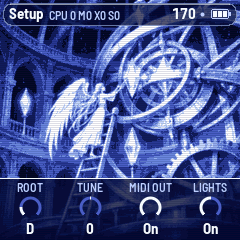
- Root: the key's root note. The scale moves with it.
- Tune: fine tuning, ±50 cents.
- MIDI out: on or off.
- Lights: On: the keys light the scale, and the unlit buttons glow dimly so they can be read on the black FM-1. Keys: the key lights only. Off.
At the top of this page is a reading of how the FM-1 is coping, CPU n Mn Xn Sn:
| CPU | The sound's load right now, % |
| M | The heaviest audio block so far, % of the time a block has |
| X | Blocks missed |
| S | Blocks that ran too long. On a second one soon after the first, AQ-1 sheds voices to catch up |
Press GLO again, on this page, to start M and S afresh.
Sounds
The keys, the pad, the bass and the melody each have a choice of sound, kept with the piece. The four knobs stay what they are: hold SELECT and turn KNOB 1 on the layer's page, one sound a click, round and round (on the Keys page, KNOB 2 for the pad). The top line says it for a moment (BASS SOUND Hollow) and then keeps it next to the page's name. The other knobs, and the knobs on the other pages, do what they always do with SELECT held.
| Layer | Sound | What it is |
|---|---|---|
| Keys | Electric | The electric piano: a soft tine, and a body that opens after the attack |
| Clear | Clean and glassy: no tine, the octaves above the note, and it stays open | |
| Organ | Soft and hollow, like a stopped pipe: only the odd harmonics, steady | |
| Felt | Warm and dark: nearly the pure note, the filter closed further | |
| Pad | Warm | Two saws a few cents apart under a dark filter |
| Airy | The filter wide open, more of it in the room, a little wider apart | |
| Choral | Further apart and equal, so it moves like voices together | |
| Deep | Close together, the filter low, only the body of the chord | |
| Bass | Warm | A round sub that speaks a little as each note starts |
| Sub | The pure sine, deep, with nothing over it | |
| Hollow | The odd harmonics: it carries more on small speakers | |
| Round | More of the octave above, a softer start and end | |
| Melody | Auto | AQ-1 chooses from what Tone allows, and changes it now and then |
| Flute, Vocal, Vibes, Marimba, Music box, Glass | Always that voice. The phrases are the same ones either way | |
| All four | User | The one you build, the last in each list (see "Building a sound") |
When you hear it:
- Keys: the bus and the chord sounding change within about a second, and the whole sound comes with the next chord.
- Pad: the sounding chord moves to it over about 150 ms.
- Bass: on the note sounding, in about a tenth of a second. Resting, the bass isn't playing: you hear it when it plays again.
- Melody: from its next note. If nothing is playing it, one quiet note in the new voice answers the turn, once you stop turning.
The sound doesn't change what's composed, and MIDI out is the same whichever you choose. All of them work in Hands and in Auto, and none costs noticeably more to play.
Building a sound
Each of the four layers has a sound of your own, User, kept with the piece: its ratio, its depth, how it comes in and how it goes. It starts from one of the sounds in the list, so you don't begin from nothing, and it's yours to take where you like. Strange bells are allowed: that's your choice, and nothing stops you. It can't get dangerously loud: the further a setting goes past where it started, the more AQ-1 turns it down.

Getting in and out.
- Go to the Keys, Melody or Bass page.
- Hold SELECT and press GLO. The top line says
BUILD FROMand the sound you were in, and that sound's values are loaded into User: you hear no change. If the layer was already on User, nothing is loaded (BUILD). If the Melody was on Auto, it starts from the voice Tone would have used. - The four knobs are now the sound's: Ratio, Depth, Attack, Decay. The strip at the bottom and the top line (
Build keys) say so. - Hold SELECT and the same four knobs are the rest of it: Start, the modulation's time (Mod time; on the Bass Speak; on the Pad Detune), nothing, and Release. The strip shows them for as long as you hold it. (There's no Degrees screen while you're in the editor.)
- To leave, press the page's own button (or SELECT + GLO). The knobs are the page's again, and the sound stays:
KEYSSOUND KEPT. Any other page's button or the SELECT encoder leaves too, and so does a new piece.
On the Keys page, SELECT + GLO goes round three places: the keys' editor, the pad's, and out.
Everything else stays as it was: the other pages' knobs, SELECT + a page's button, SELECT + a key, PLAY, and on the Melody page in Keys and Keys Arp the keys still play it, so you can hold a note with one hand and turn with the other.
Start (SELECT + KNOB 1) loads another sound's values, one a click. Whatever you had built is not lost at once: Before, the last place in that list, brings it back, until the next piece. Going into the editor from a sound in the list loads that sound's values too, and the same goes for what they replace. Before isn't saved, and doesn't come through a power-off.
| Knob | Keys | Melody | Bass | Pad |
|---|---|---|---|---|
| Ratio | The body's modulator against the note | The modulator against the note | The modulator against the note | The second saw against the first |
| Depth | How much modulation, 0–100 | The same | The same | Bright, its filter, 0–100: much darker to much brighter than its first sound |
| Attack | 5 ms – 6.4 s; 75 ms is where Electric is, and Bloom goes on acting on it | 1 ms – 6.4 s | 1 ms – 1.6 s | 18 ms – 13 s, the whole pad at each new chord |
| Decay | 0.1 – 18 s, or Long, the voice's own, a very slow one | 50 ms – 18 s | 70 ms – 9 s, or Hold: full level for its whole length | 140 ms – 18 s, or Hold: stays up through the chord |
| SELECT + KNOB 2 | Mod time: how long the modulation stays open, 18 ms – 18 s | Mod time: how long it takes to fall, 5 ms – 9 s | Speak: how much more as a note starts, 0–100 | Detune: the two saws apart, 0–50 cents |
| SELECT + KNOB 4 | Release, 50 ms – 18 s | Release, 18 ms – 18 s | Release, 5 ms – 1.6 s | Release: falls this fast before each new chord's attack, 18 ms – 3.2 s, or Off: no fall, unless Attack has moved, when it dips quickly |
Ratio is a list, the same for all: 0.25, 0.5, 0.75, 1, 1.25, 1.41, 1.5, 1.73, 2, 2.41, 2.5, 2.76, 3, 3.14, 3.5, 4, 4.24, 5, 5.4, 6, 6.27, 7, 8, 9, 10, 12, 14. The whole numbers give harmonics; the rest are what bells are made of (1.41, 2.76, 3.14 and 4.24 are good places to start).
The pad isn't FM: it's two saws through a filter, and its knobs are what those can do. It never lets go, so its Attack, Decay and Release move through the whole pad, with each new chord.
What you hear when:
- Ratio and Depth reach what's sounding at once and softly, with no click, however fast you turn. On the Bass the modulation comes off first and returns with the new ratio, in about a tenth of a second.
- Attack is heard on the next note. The keys' Decay and Release and the Pad's envelope reach what's sounding; the Melody's do too on a key you're holding, and otherwise from its next note. The Bass's Attack and Release act at once.
- In Arp and Keys Arp, as with every sound, a long Release is kept to two divisions.
- If the layer is on and has nothing sounding when you turn a knob, one quiet note answers once you stop. It isn't on MIDI, and nothing else hears of it. A layer that's off stays silent.
The keys have at most nine voices sounding at once, a long Release included: the same as the song ever asks of them. A very long Release is let down early, softly, when a new note needs the room. An overload's shed (see "GLO: Setup") takes them as it does the others.
MIDI out doesn't change with any of it: a note's length on MIDI is what it was, however short or long its sound. A piece saved with a User sound keeps it through a power-off, each piece its own; the recipes use the first sounds, and holding SAVE takes the piece back to them, its User values too.
8The screens
The screen shows one of these, the first that applies, in this order: a help card; Degrees; the title at power-on; the save; a piece's card; a break; a page; then the rest, the hold or Home.
Top line: on Home, the piece with its root and mode; on a page, the page's name, its sound (Keys: the keys' sound and the pad's, Felt/Warm; Melody: the sound, the mode and in an arpeggio the pattern, any skip and Latch, Auto/Arp/Up/S25) and the chord (Setup: its reading instead; if there is no room, the chord gives way). On the right, the tempo (EXT when it follows MIDI clock, with a mark while resting), a dot when there are unsaved changes, and the battery. Messages (ADDED F#, BREAK ON THE BAR) show here for a moment.
The battery: three bars when it's full, fewer as it runs down, with a warning colour at one bar or none. On USB power it shows a lightning bolt.
Bottom: on Home, the pages and the hold, the four values, one for each knob. The one you're turning lights up.
Home
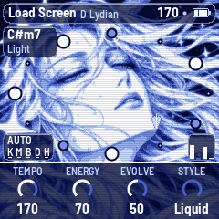
- The face: the eyes are closed with no drums and half open with drums. They're open on a full beat, and for 8 s after a new section. They blink now and then on a bar line. It smiles when a layer comes in and when SAVE saves.
- The ring: the twelve notes, with the root at the top, ringed. A small dot is a note out of the scale, a soft bead a note in it, a bright one a note of the chord, and a hollow one a note chords may not stand on.
- Top left: the chord's name. Under it, the section in Auto and the style in Hands.
- Bottom left:
HANDSorAUTO, and the five layers: Keys, Melody, Bass, Drums, Hats. A letter is marked when its layer is playing and dimmed when it's off. - Bottom right: four meters: keys, melody, bass, drums.
- A feather falls on a new chord, and now and then a star shows in the hair.
Pages
Each page has its own picture behind the knobs, and the same top line.
Break
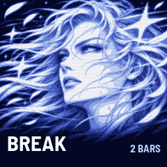
Only over a break you can hear: not at rest, not with the drums off, not at Drums level 0.
Title, card and save
The title shows at power-on for about 2.6 s, or until you touch something. A piece's card shows for about 2.6 s. SAVE has its own short animation; an autosave shows nothing.
Rest and hold
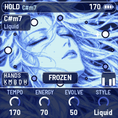
Resting on Home, the face dims and the screen says REST, PLAY TO WAKE, with no top line; turning a knob shows the four values for a moment. Holding the chord on Home, the face goes to ice and the top line says HOLD; on a page, the chord in the top line goes to ice.
9The system's notes
AQ-1 has one small voice of its own, taken from the chord playing:
- Power-on: five notes going up. It doesn't sing when it comes back from a cancelled update.
- A new piece: one quiet blip. The page buttons make no sound.
- SAVE: three notes going up, once the sound has come back. An autosave has none.
They don't go out over MIDI.
10MIDI
MIDI comes in over USB and the TRS jack, and goes out over USB.
- In, channel 1: a note adds or removes its note from the scale, like a key off the Melody page, on any page.
- In, clock: the beat follows MIDI clock, and start, stop and continue move the grid. The screen shows EXT for the tempo.
- Out (on by default):
| Channel | Layer | Notes | |---|---|---| | 1 | Keys | | | 2 | Melody | What you play too, note on and note off with the key | | 3 | Bass | | | 4 | Pad | No glides | | 10 | Drums | Kick 36, snare 38, ghosts and soft snares 38 lower, rim 37, tom 45, closed hat 42, open hat 46 |
It also sends clock, with start and stop, when it runs on its own tempo.
Off layers still send. A layer that's switched off, or turned down to level 0, goes silent inside the FM-1 but keeps sending its MIDI, so you can play it from another instrument. Turning MIDI out off lets every note go and sends all notes off.
Screen reader
AQ-1 can tell a screen reader what its screen shows. Connect the FM-1 by USB, open the FM-1 Screen Reader in Chrome or Edge, and click Connect. It reads out the page you're on and its knobs, a knob's value as you turn it, the piece and its key, the notes you add or take out, help cards, every message, the layers and the mode, a break, and the chord each time it moves. Press W to hear the whole screen again. The FM-1 says nothing until the page connects, so a DAW on the same cable never sees it.
11Saving
AQ-1 keeps all eight pieces in the FM-1's memory, each as you left it: the knobs, the scale, the degrees, the sounds, the ones you built, the melody's mode and Latch, Hands or Auto, and the piece you're on, plus Tune, MIDI out and Lights. The music isn't saved, nor the notes you're playing or have latched, and neither are the layers you switched: power-on starts anew, with the keys and the pad.
Writing to the memory stops everything for a moment, so every write goes through a dip in the volume: down in 150 ms, the write, and back in 300 ms.
- By itself (autosave): 4 seconds after the last touch, but only while resting. A touch or MIDI start before the write cancels it. It never saves while playing. A dot at the top of the screen means there are unsaved changes.
- SAVE: saves now, playing or not, with its animation and its three notes. Buttons pressed during a save wait and then act, in order. Knobs, keys and PLAY don't wait.
- Hold SAVE for 1.5 s: the piece goes back to its recipe. That isn't saved until the next save, so switching off before then brings your version back.
- If a write fails, the screen says
NOT SAVEDFLASH ERROR, and it doesn't try by itself again until something changes.
A save from another firmware, or from another version of AQ-1's format, isn't read: the pieces start from their recipes.
12Troubleshooting
Update mode: hold OCT− and OCT+ together for five seconds. A countdown appears; let go before it ends to cancel. A cancelled update plays again, and your unsaved changes stay marked as unsaved.
Calibration: if a button or knob does the wrong thing, hold OCT− and OCT+ while you switch the FM-1 on. The screen then asks you to press each button and turn each knob in turn.
After a crash: AQ-1 shows a red CRASH screen and restarts by itself a few seconds later. The next start shows RESTARTED AFTER A CRASH and an address (PC ...) for a moment. If you report the problem, include that address and what you were doing.
Safe mode: if AQ-1 crashes twice in a row while starting, it starts in SAFE MODE instead. There's no sound, but USB works, so the installer can reach it: install AQ-1 again, or put the stock firmware back. Press PLAY to try starting AQ-1 normally again. If even safe mode fails twice, the FM-1 drops into the chip's own update mode, and only the rescue below can reach it.
Recovering an FM-1 that won't start
An FM-1 in the chip's own update mode shows a blank screen, and neither the installer nor M-VAVE's updater can see it. A script can put M-VAVE's firmware back, on a Mac, with the USB cable you already have.
Open Terminal, paste this line and press Return:
bash -c "$(curl -fsSL https://raw.githubusercontent.com/hugelton/felucca-bsp/main/tools/fm1_rescue.sh)"- If a window asks to install the command line developer tools, click Install. When it has finished, paste the line again.
- If it asks for a password, type your Mac password (nothing shows as you type) and press Return.
- When it says it's waiting, plug the FM-1 in and switch it on. The script catches it, checks the chip, saves a backup of the FM-1's memory in the
fm1-rescuefolder in your home folder, and asks before it writes anything. - Type yes and press Return. Don't unplug anything until it says it's restarting the FM-1. The FM-1 then starts into its original firmware, and you can install AQ-1 again from there.
The script downloads M-VAVE's FM-1 V15 firmware and JieLi's flash loader, and checks both against known fingerprints. It writes only the firmware area of the memory, never the bootloader or the FM-1's own settings, and checks everything it writes. Running it again is always safe. If the FM-1 never shows up at all, Felucca's FM-1-transporter (a small RP2040 board wired to the USB lines) can still reach it.
13Parameters
The defaults are Load Screen's; each piece has its own.
| Page | Value | Range | Load Screen |
|---|---|---|---|
| Home | Tempo | 150–180 | 170 |
| Home | Energy | 0–100 | 70 |
| Home | Evolve | 0–100 | 50 |
| Home | Style | Liquid, Roller, Jungle, Half, Drift, Loading | Liquid |
| Keys | Level | 0–100 | 60 |
| Keys | Bloom | 0–100 | 50 |
| Keys | Bright | 0–100 | 50 |
| Keys | Notes | 0–3 | 3 |
| Melody | Level | 0–100 | 60 |
| Melody | Rate | 0–100 | 50 |
| Melody | Tone | 0–100 | 50 |
| Melody | Octave | −2 – +2 | 0 |
| Bass | Level | 0–100 | 50 |
| Bass | Move | 0–100 | 50 |
| Bass | Glide | 0–100 | 10 |
| Bass | Octave | −1 – +1 | 0 |
| Drums | Level | 0–100 | 45 |
| Drums | Breaks | 0–100 | 50 |
| Drums | Hats | 0–100 | 50 |
| Drums | Kit | Glass, Moss | Glass |
| Space | Echo | 0–100 | 40 |
| Space | Echo time | 1 bar, 1/2, 1/2., 1/4., 2 bars, 4 bars | 1/4. |
| Space | Reverb | 0–100 | 65 |
| Space | Size | 0–100 | 80 |
| Setup | Root | C – B | D |
| Setup | Tune | −50 – +50 cents | 0 |
| Setup | MIDI out | Off, On | On |
| Setup | Lights | Off, On, Keys | On |
| ALGORITHM | Mode | 8 modes, or Custom | Lydian |
| Keys, SELECT + KNOB 1 | Keys' sound | Electric, Clear, Organ, Felt, User | Electric |
| Keys, SELECT + KNOB 2 | Pad's sound | Warm, Airy, Choral, Deep, User | Warm |
| Melody, SELECT + KNOB 1 | Melody's sound | Auto, Flute, Vocal, Vibes, Marimba, Music box, Glass, User | Auto |
| Melody, SELECT + KNOB 2 | Melody's mode | Phrases, Arp, Keys, Keys Arp | Keys (Auto: Phrases) |
| Melody, SELECT + KNOB 3 | The arpeggio's pattern | Up, Down, Up-Down, Random, Conv, PedT, PedR, Played | Up |
| Melody, SELECT + KNOB 4 | The arpeggio's skip | 0–100 | 0 |
| Melody, in Keys Arp, SELECT + REC | Latch | Off, On | Off |
| Bass, SELECT + KNOB 1 | Bass's sound | Warm, Sub, Hollow, Round, User | Warm |
| Keys, Melody, Bass, SELECT + GLO | The sound editor | Ratio, Depth, Attack, Decay; with SELECT: Start, Mod time (Speak, Detune), Release (see "Building a sound") | As the sound it starts from |
| Space, SELECT + KNOB 1, 3 | Keys' effect, melody's effect | Off, Chorus, Autopan, Tremolo, Filter | Off |
| Space, SELECT + KNOB 2, 4 | Keys' Motion, melody's Motion | 0–100 | 50 |
| Space, GLO + KNOB 1, 3 | Keys' Depth, melody's Depth | 0–100 | 50 |
| Space, FX + KNOB 1, 3 | Keys' Echo, melody's Echo | 0–200 | 100 |
| Space, FX + KNOB 2, 4 | Keys' Reverb, melody's Reverb | 0–200 | 100 |
14Credits
AQ-1's code is free software under the Mozilla Public License 2.0. The screen's art is not under the MPL: its owner keeps all rights, and you may install, use and share unchanged packages; see LICENSING.md.
- AQ-1 is a fork of AMB-1 by Charles Vestal. This manual grew from AMB-1's, and the echoes come from AMB-1, which took them from the chain of Brian Eno's Discreet Music.
- The reverb is Jon Dattorro's plate ("Effect Design, Part 1", JAES 1997), by way of FoMni-1.
- The platform (hardware layer, USB, update loader, installer and storage) is fm1-base and felucca-bsp, from Felucca by Leo Kuroshita, Hügelton Instruments.
- The idea of running FM-1 firmware in the browser comes from Groove OS.
- The fonts are Barlow Semi Condensed and Terminus (SIL Open Font License).
M-VAVE and FM-1 are trademarks of their owners. AQ-1 is not connected with M-VAVE, Charles Vestal, Brian Eno or Hügelton Instruments.